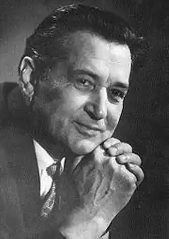
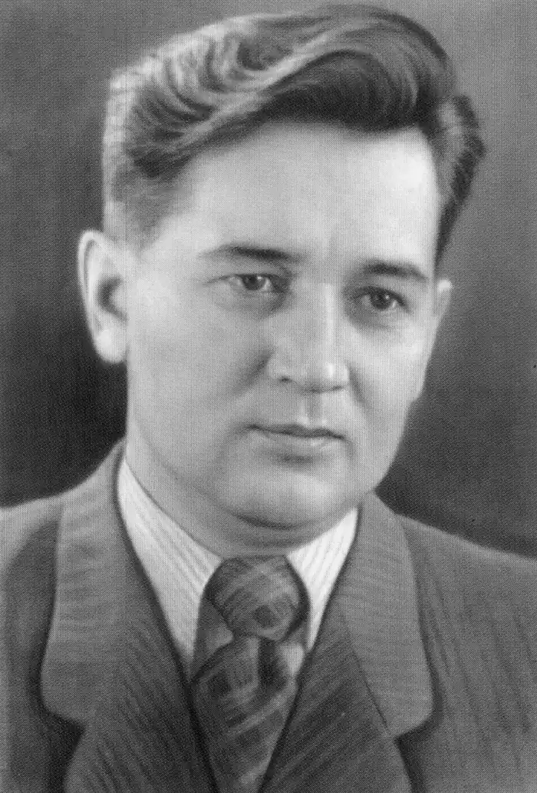

ОЛЕСЬ ГОНЧАР
(1918 — 1995)
Олесь Терентійович Гончар народився 3 квітня 1918p. Після смерті матері, коли хлопцеві було 3 роки, із заводського селища на околиці Катеринослава (тепер Дніпропетровськ) його забрали на виховання дід і бабуся в слободу Суху Козельщанського району Полтавської області. Працьовита і щира в ставленні до людей бабуся замінила майбутньому письменникові матір. Тридцяті роки в житті Олеся Гончара — період формування його як громадянина й митця. До вступу в Харківський університет (1938) він навчався в технікумі журналістики, працював у районній (на Полтавщині) та обласній комсомольській газеті в Харкові і дедалі впевненіше пробував свої творчі сили як письменник. Ранні оповідання й повісті ("Черешні цвітуть", "Іван Мостовий" та ін.) Гончар присвятив людям, яких добре знав, з якими не раз стрічався в житті. 1936р., коли почалася громадянська війна в Іспанії, молодий Гончар гаряче мріяв потрапити в саму гущу тих подій. Цьому бажанню тоді не судилося збутися, але через п'ять літ він таки "кинув синій портфель" і разом з іншими студентами Харківського університету пішов добровольцем на фронт. Воєнні умови (він був старшим сержантом, старшиною мінометної батареї) не дуже сприятливі для творчості. Але й за таких нелегких обставин О. Гончар не розлучався з олівцем та блокнотом. Вірші, що народжувалися в перервах між боями, сам письменник назве згодом "конспектами почуттів", "поетичними чернетками для майбутніх творів". Сьогоднішнє прочитання їх переконує, що це справді так. Ліричний герой "Атаки", "Думи про Батьківщину", "Братів" та інших фронтових поезій Гончара духовно, емоційно близький до героїв повоєнних його романів і новел, передусім "Прапороносців". Робота над "Прапороносцями" тривала три повоєнних роки. В цей час, правда, Олесь Гончар публікує ще кілька новел і повість "Земля гуде", завершує навчання в вузі (Дніпропетровський університет, 1946), але головним підсумком цих років стає трилогія "Прапороносці". На сторінках журналу "Вітчизна", а згодом і окремим виданням з'явилися всі три частини роману ("Альпи", 1946; "Голубий Дунай", 1947; "Злата Прага", 1948). Високу оцінку творові, відзначеному двома Державними преміями СРСР, дали тоді Ю. Яновський, П. Тичина, О. Фадеев, Остап Вишня. Після завершення роботи над трилогією "Прапороносці" героїка війни і далі хвилювала митця. В кінці 40-х і на початку 50-х років він пише низку новел ("Модри Камень", "Весна за Моравою", "Ілонка", "Гори співають", "Усман та Марта" й ін.), багато в чому суголосних з "Прапороносцями". У написаній тоді ж документальній в основі своїй повісті "Земля гуде" зображено діяльність молодіжної підпільної організації "Нескорена Полтавчанка", очолюваної комсомолкою Лялею Убийвовк. Видані протягом 50-х років книги новел "Південь" (1951), "Дорога за хмари" (1953), "Чари-комиші" (1958), повісті "Микита Братусь" (1951) і "Щоб світився вогник" (1955) присвячені мирному життю людей, важливим моральним аспектам їхніх взаємовідносин, а романна дилогія "Таврія" (1952) і "Перекоп" (1957) — історико-революційній проблематиці. Якісна новизна романів "Людина і зброя" (1960) та "Циклон" (1970) полягала в тому, що акцент у них зроблено на найсокровенніших питаннях життя і смерті людини, на проблемах незнищенності її. Свіжість погляду на світ, незвичайну заглибленість у життя продемонстрував автор "Прапороносців" у нових своїх творах, що з'явилися протягом 60 — 70-х років. Серед них — романи "Тронка" (1963), "Собор" (1968), "Берег любові" (1976), "Твоя зоря" (1980), повість "Бригантина" (1972), новели "Кресафт" (1963), "На косі" (1966), "Під далекими соснами" (1970), "Пізнє прозріння" (1974) та ін. Якщо роман "Тронка" приніс авторові Ленінську премію (1964р.), то доля написаного наприкінці 60-х років "Собору" склалася драматично. Перші рецензії на роман були схвальні, але невдовзі вульгаризаторська критика піддала його тенденційному остракізму, і твір було вилучено з літературного процесу на два десятиліття. Працю на ниві художньої прози Олесь Гончар постійно поєднує з літературно-критичною творчістю. Почавши ще в студентські роки з досліджень поетики М. Коцюбинського і В. Стефаника, він згодом створив десятки статей, які вже публікувалися в трьох окремих книгах ("Про наше письменство", 1972; "О тех, кто дорог", 1978; "Письменницькі роздуми", 1980) та входили частково до шеститомного зібрання творів письменника. Твори О. Гончара перекладалися на 67 мов, а творчий досвід письменника засвоюється і вітчизняними, і зарубіжними майстрами слова. Помер письменник 14 липня 1995р. Олесь Гончар (Народився 3 квітня 1918) ОРБІТИ ПОТУЖНОГО СЛОВА У жовтні 1990 року в столиці США Вашингтоні, у фешенебельному Хілтон-хотелі, розташованому неподалік від пам'ятника Тарасові Шевченку та Білого Дому, відбувався XXII Міжнародний науковий з'їзд Американської Асоціації для розвитку славістичних студій. У рамках з'їзду, де було заслухано понад 800 доповідей, — окрема міжнародна конференція "Людина і її місія у творчості Олеся Гончара". Звучали на конференції англійська й українська мови, змістовні доповіді про творчість прозаїка, надто про "Собор", виголосили відомі вчені з української діаспори, як-от: професори Л. Рудницький, Л. Онишкевич, М. Лабунька, М. Тарнавська, В. Маркусь. Зокрема, доктор філософії та президент університету Ла Салль з Філадельфії П. Елліс пошанував Олеся Гончара у своєму слові як "провідного прозаїка України та одного з передових письменників нашого часу", котрий своїми творами, надто "шедевром" — "Собором", "спричинився до кращого міжнародного порозуміння, ще заки пан Горбачов започаткував свою політику перебудови..." І ще було сказано про той же "Собор" М. Тарнавською: якби цей роман вчасно з'явився в англійському перекладі (хоч до сьогодні твір виходив на американському континенті чотири рази; востаннє, у донесенні Л. Рудницького та Ю. Ткача, — в 1990 році), він викликав би у Америці сенсацію: так глибинно відтворено тут "екзотику" радянського суспільного ладу та викрито національне нищительство. Але, засвідчувала доповідачка, і в нинішнього американського читача роман знаходить жвавий відгук. Вслухаючись у ці промови, неможливо було не пройнятись думкою: а чи все знаємо в Україні про свого письменника, як і про літературу в цілому, чи замислюємося належно над підоймами, що виводять її на орбіту вселюдського інтересу? Відзначаємося-бо дивовижною здатністю самохітне спровінціалізовувати власні уявлення про свою літературу, шукати естетичні вартості де завгодно, лише не в себе дома. О, багатовікова наша підпорядкованість імперії, яка так методично вбивала нам у голови комплекс нижчевартості, полишила наслідки просто фатальні! Тому-то й існує потреба, аби ми, привчені не довіряти самим собі, вислухали про себе думку ще й "збоку" (хоч би заокеанську, як у даному випадку), аби потвердити для себе у цей спосіб те, про що часом здогадуємось майже інстинктивно. От і стосовно Олеся Гончара. Як знаємо, офіційна ідеологія доклала немалих зусиль до того, що у свідомості вже кількох поколінь його образ насамперед асоціюється зі "співцем визвольної місії Радянської Армії в країнах Східної Європи ("Прапороносці"), втілювачем "ідей радянського патріотизму". Подібними цитатами "годують" у нас учнівську молодь почасти ще й сьогодні. Власне, це і є те універсальне прокрустове ложе, конструйоване вульгарно-соціологічними розпорядниками, у яке, притім ще десь від п'ятдесятих років, Олесь Гончар, звичайно ж, принципово не вміщається. Доречно згадати тут написане вже давно, але надруковане лише в наші дні оповідання "Двоє вночі", де письменник відтворив драматичну колізію протиборства О. Довженка і Сталіна. О ні, недаремно він звернувся до цієї теми — надто вже багато суголосного відчув він у тому протистоянні стосовно власного життєвого і творчого досвіду. Так, і найвищі офіційні премії, й ордени, навіть членство у ЦК — в Олеся Гончара усе те було. Та свідчить це, одначе, про те найбільше, що письменника, розуміючи силу його таланту, намагалися приручити. Коли ж з приручуванням нічого не виходило, партійно-державна машина брутально звалювалася на нього і, як і тому ж О. Довженку, металася. Окрім відомих фактів безпрецедентного шельмування "Собору", згадаймо ще й спробу замовчування пошанування письменника в день його сімдесятиріччя у зовсім недавньому 1988 році... Драматичну історію долі письменника за умов тоталітарного режиму на прикладі Олеся Гончара можна б відтворити доволі яскраво. Отож, кажучи про національний сенс Гончаревої діяльності, найперше слід акцентувати на такому: починаючи від шістдесятих років, письменник став однією з опор українського національного відродження. З його стійкості черпають стійкість інші, з його віри зміцнюють віру власну. Досить сказати, що Гончаревим вступним словом починалися всі найзнаменніші національно-відроджувальні акції, що відбулися в останні роки на Україні: Установча конференція Товариства української мови ім. Т. Г. Шевченка, з'їзд Народного Руху України, перше за багато літ свято Соборності України у січні 1990 року, Перший конгрес міжнародної асоціації україністів тощо. Усе те — потужні імпульси, що додають снаги кожному українцеві-патріотові, адже йдуть вони від високоавторитетної людини, котра поставила своє слово на сторожі нації. І зрозуміло, що всі найкращі, наймиліші барви і тони рідної України бринять у художніх творах письменника. Повсякчас звучить у них симфонія драматичної національної історії; відчуття кровної приналежності до свого талановитого і працьовитого народу сповнює найсвітліших героїв творів майстра. Так послідовно витримується ним та першоумова, що й надає художнім з'явам відкритості до їх засвоєння іншими народами, так витворюється гармонія межи глибоким національним укоріненням Гончаревої прози та вселюдським відгуком, що вона його здатна викликати. […] Анатолій ПОГРІБНИЙ (З книги "Українське слово" — Т. 3. — К., 1994.)